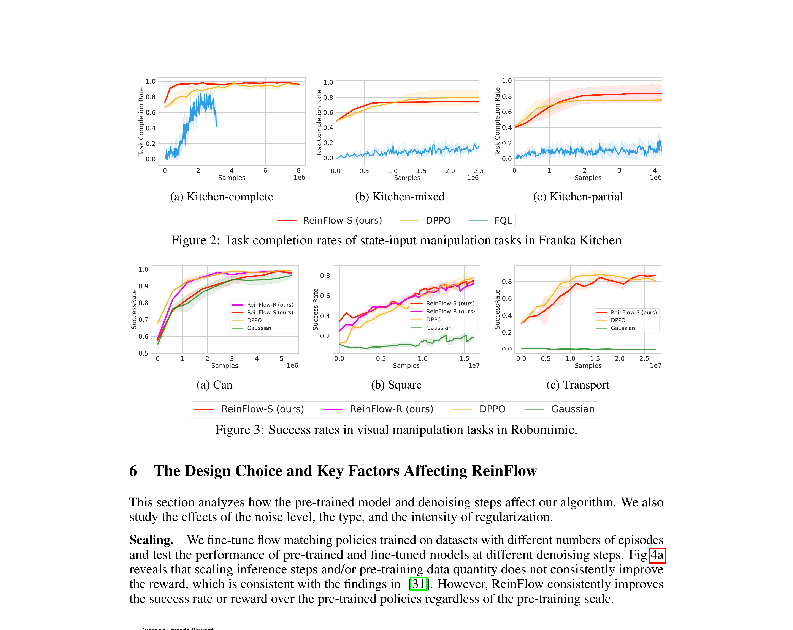

ReinFlow: Fine-tuning Flow Matching Policy with Online Reinforcement Learning
Zhang 等 · 2025 · NeurIPS 2025 · arXiv:2505.22094 · Zotero 6LLMWBFR
ReinFlow 给确定性的 flow 路径注入可学习高斯噪声，把它变成离散 Markov 过程，从而得到可计算 likelihood 和可控探索。
§1 Introduction：确定性 flow policy 做在线 RL 时，探索和 likelihood 从哪里来
Flow Matching/Rectified Flow 以 ODE 从高斯噪声运输到动作，少步甚至一步推理，比 diffusion policy 更适合机器人实时控制。但预训练 flow 是确定性路径：给定初始噪声和条件后，中间转移没有可学习随机策略概率；在稀疏奖励在线 RL 中，既难定义 PPO log-ratio，也缺少可控探索。
ReinFlow 为每个离散积分步注入状态相关、可学习且有界的 Gaussian noise，把 ODE 离散化变成 Markov chain。噪声网络给出精确 transition likelihood，也决定探索尺度；环境 advantage 可以像普通 policy gradient 一样乘到各步 log-prob，速度场与噪声网络联合更新，并以 KL/裁剪限制偏离预训练 flow。
展开原文 · 核心机制
“injects learnable noise into a flow policy’s deterministic path”
§2 Related Work：DPPO、Flow Q-Learning 与随机 flow
DPPO 利用 diffusion 本身的随机去噪 transition；Flow Q-Learning 在离线 critic 引导下学习/蒸馏 flow，却没有在线探索。Flow-GRPO 等将噪声或组相对优化用于视觉生成，但连续机器人控制需要状态条件 likelihood、稀疏回报与少步数值稳定。
ReinFlow 的 noise network 是算法关键，不是普通 action noise：它作用在生成路径内部，使每个积分步都成为可优化随机 policy。代价是噪声会增大少步 discretization error；因此评测应同时报告步数、wall time、路径稳定和最终控制，而非只给回报增幅。
§3 问题设定：SFT 到底漏掉了什么
VLA 预训练与 SFT 解决“从观测到动作的模仿”，但部署是闭环过程：动作会改变下一帧，错误会把策略带到演示没有覆盖的状态。flow ODE 的路径本来是确定的，策略梯度既缺探索又难稳定计算动作概率，少步推理时尤其突出。
预训练 rectified/shortcut flow 在 K 个积分步内从高斯噪声生成连续动作，每一步额外加入状态相关高斯噪声。
展开原文 · 核心主张
“injects learnable noise into a flow policy's deterministic path”
§4 方法总览：反馈信号怎么走
上一节明确了状态、动作与反馈，现在沿论文原图追踪训练信号。重点不是背模块名，而是判断：哪部分保持预训练先验，哪部分真的被 RL 改写。

1. 从预训练 rectified/shortcut flow 开始
从监督训练好的 rectified/shortcut flow policy 开始，先保留其少步动作生成能力。基座速度场提供可执行先验，RL 只在其上引入探索与回报偏置。
输入是什么：随机噪声，以及当前画面、语言指令或机器人状态等条件信息。噪声只是生成过程的起点，不是机器人真的要执行的动作。
这一步究竟做什么：从监督训练好的 rectified/shortcut flow policy 开始，先保留其少步动作生成能力。基座速度场提供可执行先验，RL 只在其上引入探索与回报偏置。
输出到哪里：参数得到更新的模型，或能供下一轮训练使用的新监督信号。这个结果会交给下一步“每个积分步注入可学习噪声”继续处理。
为什么不能省略：前面的数据或分数本身不会自动改变模型；必须通过损失函数把误差信号变成参数更新。
2. 每个积分步注入可学习噪声
在每个积分步加入由网络预测的有界高斯噪声，使原本确定性的 ODE 变成随机 Markov 转移。噪声幅度可随状态和时间变化，因此探索不是固定地抖动最终动作。
输入是什么：来自上一步“从预训练 rectified/shortcut flow 开始”的产物：参数得到更新的模型，或能供下一轮训练使用的新监督信号。本步骤还会按论文设置读取当前条件、时间步或训练信号。
这一步究竟做什么：在每个积分步加入由网络预测的有界高斯噪声，使原本确定性的 ODE 变成随机 Markov 转移。噪声幅度可随状态和时间变化，因此探索不是固定地抖动最终动作。
输出到哪里：一个或多个候选未来、动作或轨迹，以及必要的中间状态。这个结果会交给下一步“用高斯转移写出精确 log probability”继续处理。
为什么不能省略：随机起点允许模型表达多种合理结果；逐步生成则把无结构噪声限制到训练数据支持的动作或视频分布。
3. 用高斯转移写出精确 log probability
每个转移现在都有显式高斯密度，整条采样轨迹的 log-prob 可由逐步概率相加得到。这样 PPO 的 likelihood ratio 有明确含义，不需要近似最终动作的不可解边缘密度。
输入是什么：来自上一步“每个积分步注入可学习噪声”的产物：一个或多个候选未来、动作或轨迹，以及必要的中间状态。本步骤还会按论文设置读取当前条件、时间步或训练信号。
这一步究竟做什么：每个转移现在都有显式高斯密度，整条采样轨迹的 log-prob 可由逐步概率相加得到。这样 PPO 的 likelihood ratio 有明确含义，不需要近似最终动作的不可解边缘密度。
输出到哪里：一个或多个候选未来、动作或轨迹，以及必要的中间状态。这个结果会交给下一步“调用 PPO 等策略梯度联合更新速度场与噪声网”继续处理。
为什么不能省略：它承担上下两步之间的接口；缺少它，前一步产生的信息无法以正确格式或正确含义传到下一步。
4. 调用 PPO 等策略梯度联合更新速度场与噪声网
策略梯度同时更新速度场与噪声网络：速度决定动作均值，噪声控制探索。clip/KL 约束两者不要一次偏离 reference 太远，避免少量高回报样本破坏 flow 几何。
输入是什么：来自上一步“用高斯转移写出精确 log probability”的产物：一个或多个候选未来、动作或轨迹，以及必要的中间状态。本步骤还会按论文设置读取当前条件、时间步或训练信号。
这一步究竟做什么：策略梯度同时更新速度场与噪声网络：速度决定动作均值，噪声控制探索。clip/KL 约束两者不要一次偏离 reference 太远，避免少量高回报样本破坏 flow 几何。
输出到哪里：参数得到更新的模型，或能供下一轮训练使用的新监督信号。这是图中这条链路的最终产物，随后会进入真实执行、模型更新或指标评测。
为什么不能省略：前面的数据或分数本身不会自动改变模型；必须通过损失函数把误差信号变成参数更新。
§5 机制细拆：动作、价值与更新边界
上图给出了宏观流程，但真正决定训练是否稳定的是三个接口：动作以什么粒度出现、反馈怎样变成可学习信号、哪些参数允许被更新。
§6 目标函数：把直觉压缩成可检查的量
前一节说清了信号路径，这里把核心优化目标写成教学化公式。读公式时依次检查：回报影响谁、数据支持在哪里、预训练策略受到什么约束。
- $v_\theta$
- 预训练 flow 的速度场
- $\sigma_\phi\epsilon$
- 可学习探索噪声
- $a_k$
- 去噪/积分链中的中间动作
速度场与噪声网络可联合更新，外接 PPO 等策略梯度子程序，并用正则限制策略偏离。
§7 训练与评测：数字是在什么条件下得到的
只看最终成功率会隐藏数据预算、仿真/真机差异和基座强弱。本节把论文的实验对象与比较关系放回同一张表。
| 策略与动作 | 预训练 rectified/shortcut flow 在 K 个积分步内从高斯噪声生成连续动作，每一步额外加入状态相关高斯噪声。 |
|---|---|
| 训练反馈 | 环境 advantage 乘以每个 Markov 转移的 log probability；噪声网络既定义可计算 likelihood，也控制探索尺度。 |
| 更新方式 | 速度场与噪声网络可联合更新，外接 PPO 等策略梯度子程序，并用正则限制策略偏离。 |
| 实验覆盖 | 覆盖腿式 locomotion、Franka Kitchen 状态任务、RoboMimic 视觉操纵和稀疏长程任务，比较不同去噪步数与 wall time。 |
| 关键对照 | DPPO 对扩散去噪链反传；ReinFlow 针对少步 flow，用显式高斯 Markov 转移获得更便宜的 likelihood。 |
§8 结果怎么读：证据、因果与可迁移结论
报告 locomotion 回报平均净增 135.36%，相对 DPPO 节省 82.63% wall time；操纵成功率平均净增 40.34%。
DPPO 对扩散去噪链反传；ReinFlow 针对少步 flow，用显式高斯 Markov 转移获得更便宜的 likelihood。
flow 策略要做在线 RL，首先要回答‘探索随机性从哪里来、概率怎么计算’。
§9 复现与工程检查
前一节判断了证据强度，复现时还要把训练信号对齐、时间尺度和数据统计逐项落地，否则“同名算法”也可能得到完全不同的结果。
- 逐步核对高斯均值、方差和 log-prob；分别报告 rollout 时间与优化时间；噪声尺度、K 和正则强度需要联合扫描。
- 先跑通不加 RL 的预训练/SFT 基线，并保存逐任务成功率与失败视频。
- 同时记录环境步数、真实墙钟时间、人工介入次数、更新次数和推理延迟。
- 把奖励、终止、action chunk mask 与归一化统计做成可视化单元测试。
§10 适用边界与研究启发
可学习噪声要同时服务探索与似然计算；正则强度和去噪步数仍是敏感超参数。
flow 策略要做在线 RL，首先要回答‘探索随机性从哪里来、概率怎么计算’。